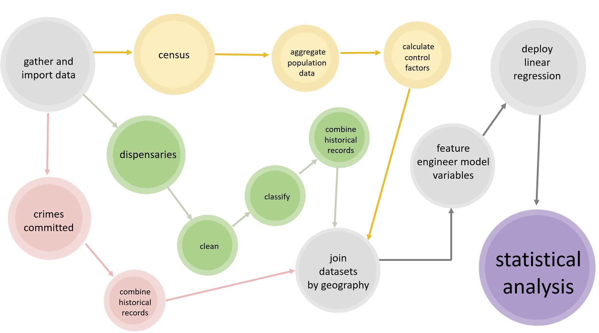
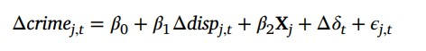
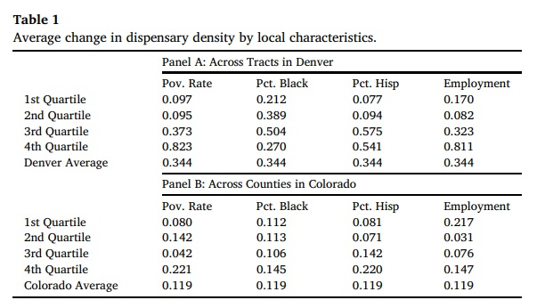
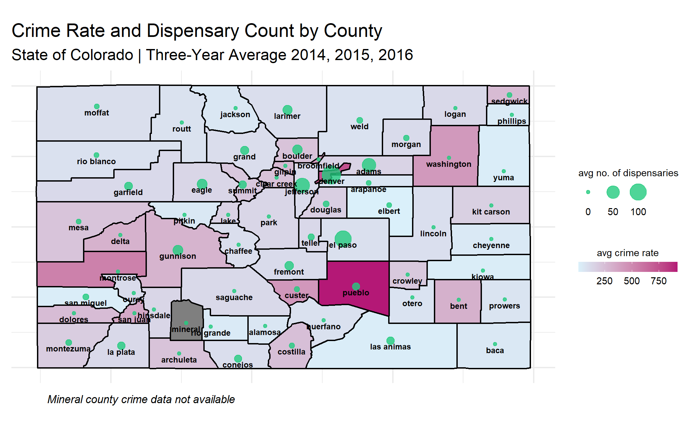
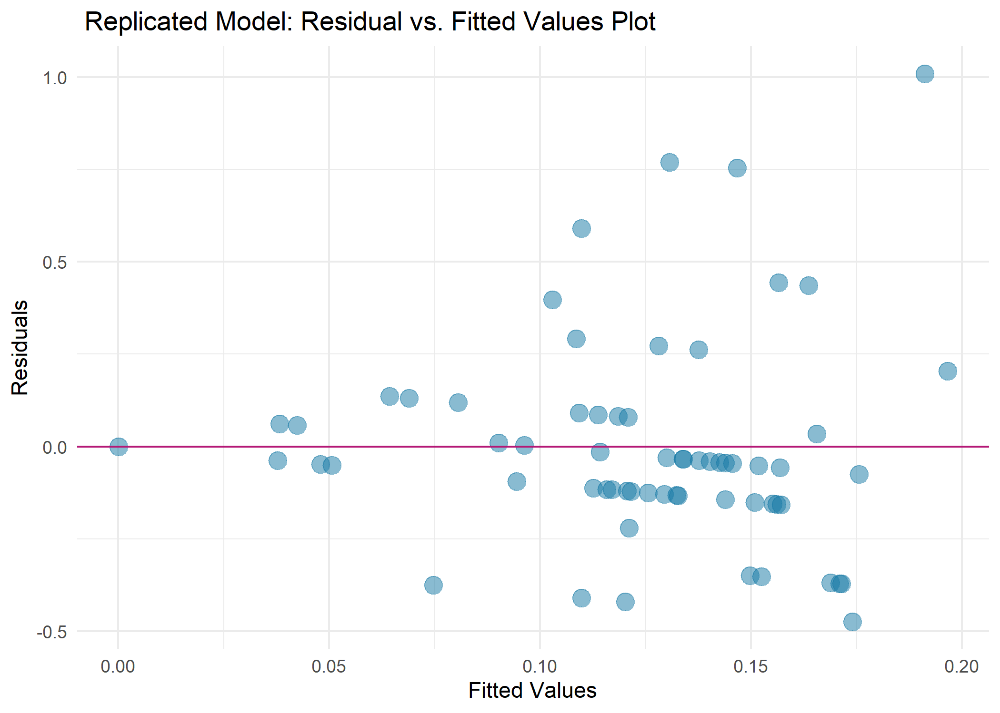

The Final Report (DRAFT)
- Introduction
Somewhere in my mother’s basement, is my prized 1995 tie-dyed DARE tee-shirt, a paradoxical relic of elementary classroom hours spent discussing the dangers of peer-led drug use. Those fears were not unwarranted, the CDC (Center for Disease Control) reports that 136 Americans die daily from opioids and illicitly manufactured fentanyl1, for me - a friend or three. In my experience, most drug prevention programs portray cannabis as the catalyst to the life doomed by addiction.
When recreational cannabis use became legal in Michigan, the culture shift was palpable. In an ironic twist of fate, the taboo habits of those once deemed as social deviants are now capitalized and funding K-12 education2. I am fascinated by this turn of events, and I am curious if there are predictors from more tenured “green” states that reveal unintended ill-consequences.
In my data mining project, I explore the relationship between the presence of cannabis dispensaries and neighborhood crime rates. By replicating the methodology of Brinkman and Mok-Lamme’s 2019 study, “Not in my backyard? Not so fast. The effect of marijuana legalization on neighborhood crime” (NIMBY), I aim to contribute a nuanced perspective on this budding industry and how it shapes public safety and city planning.
My approach involved immersing myself in the wild world of crime and cannabis statistics in Colorado. Using the data sources outlined in NIMBY, I built the variables defined in NIMBY’s linear regression model, described in more detail in the methods section.
In line with the results in NIMBY, my findings indicate that there is no statistically significant relationship between an increased presence of cannabis dispensaries and crime.
- Related Works
A related and noteworthy body of work is the 2021 meta-analysis conducted by D. Mark Anderson and Daniel I. Rees’ paper “The Public Health Effects of Legalizing Marijuana.” The appendix presents an extensive comparison of 70 studies related to the impact of marijuana legalization on public health outcomes by empirical strategy, and study results. This paper served as an excellent resource to understand the myriad of ways in which this topic is being studied, including the study I will replicate. The authors ultimately conclude that while the existing body of research benefits from a wealth of state-level data, the outcomes remain inconclusive. Further research along with careful policy design is needed to mitigate the negative impact of legalization on crime rates and other outcomes.
In contrast, the 2019 paper “Marijuana Dispensaries and Neighborhood Crime and Disorder in Denver, Colorado” by Lorrine A. Hughes, Lonnie M. Schaible, and Katherine Jimmerson offers contradictory findings. Utilizing a Bayesian Poisson regression model, the authors discovered a statistically significant correlation between the presence of dispensaries and increased rates of neighborhood crime—except for murder and auto theft. This study highlights the complexities of the issue and the necessity for a more nuanced understanding of the interplay between cannabis dispensaries and crime rates.

- Methods
While all of the data referenced in NIMBY is publicly available, I found it necessary to deviate from the original’s papers methodology due to data quality issues and time constraints.
My diagram below illustrates the utilization of R code to construct a data pipeline for the linear model and its associated variables.
In the interest of interpretability, I divided my work into four distinct segments, each highlighted in the navigation bar of this site. I hope this structured breakdown allows readers to navigate through my process efficiently, providing transparent insight into my methods employed and limitations faced throughout this project.

In summation, the data mining pipeline consisted of several stages, each color coded above.
Dispensary license records were cleaned and preprocessed, removing irrelevant columns, standardizing the format, and aggregating the data by county and year. | code
Leveraging the power of the TidyCensus package, I extracted population data for the target variables from the American Community Survey (ACS) census database. | code
I wove the datasets together using county-level identifiers (GEOID), allowing for the computation of per capita values for dispensaries and crime rates and year-over-year fluctuations. | code
Finally, I introduced the new variables into a linear regression model. | code

The goal is to estimate the causal effect of changes in dispensary density on changes in crime rates, while accounting for potential biases and confounding factors using the linear regression model above.
Variable Defined Œîcrime j,t year-over-year changes in crime rates the jth geography in month t Œîdisp j,t year-over-year changes in dispensary rates j neighborhood t time ùõΩ0 (intercept) baseline level of year-over-year changes in crime rates ùõΩ1 (coefficient) expected change in year-over-year crime rates associated with a one-unit increase ùõΩ2 vector of estimated coefficients on the control variables (demographic characteristics, economic conditions) X a vector of control variables (demographic characteristics, economic conditions) Œîùõøt time fixed effects ⋲ j,t error term
- Results and Discussion
Comparing Dispensary Counts
Comparing Control Variables
Table 1. From NIMBY:

interpretation: the average county in Colorado saw a 11.9% increase in the number of dispensaries between 2014-2017. Counties that fall within the 4th quartile (highest) for poverty rates saw the largest increase (22.1%) average growth in the number of dispensaries, followed by the 4th quartile for Hispanic populations, and the 1st quartile (lowest) employed populations.
comparison: now let’s look at my results, my calculations led me to a 11.5% three-year average growth in dispensaries, which is very close to NIMBY’s result. However, when I compare the individual demographics there is a lot of variance between the two results. The lowest quartile for employed populations revealed the most growth in dispensaries (+50.8%), followed by the 2nd quartile for black populations (27.0%).
The gaps between my employment quartiles and NIMBY’s are too wide to ignore. With more time, I’d explore the difference in methodologies and identify the contributing factors.
- Conclusions
what I got out of this project:
Understand data construction
the art of dealing with changing data
data pipelines
missing data
data processing
Comparing the Dependent and Independent variables:

interpretation: Denver is clearly where we see the larger crime rates, and more dispensaries. NIMBY referrs to Devver as the “mecca of recreational cannabis.” El Paso is an interesting county with a relativity high dispensary density and low crime rate, as well as pueblo county where the inverse is true

- Data and Software
Data Sources:
Colorado Department of Revenue: Medical and Retail Marijuana Licencees
City and County of Denver Surveyor’s Office: Denver Geographic Boundaries
FBI Uniform Crime Reporting Program: Colorado
2014 American Community Survey: Colorado Population, Race, Ethnicity, and Poverty Rates
Software:
Rstudio
Packages:
lubridate (Grolemund and Wickham 2011)
openxlsx (Schauberger and Walker 2023)
readx (Wickham and Bryan 2023)
sf (Pebesma 2018)
tidycensus (Walker and Herman 2023)
tidygeocoder (Cambon et al. 2021)
tidyverse (Wickham et al. 2019)
tigris (Walker 2023)
- Works Cited
Brinkman, J., & Mok-Lamme, D. (2019). Not in my backyard? Not so fast. The effect of marijuana legalization on neighborhood crime. Regional Science and Urban Economics, 78. https://doi-org.ezproxy.gvsu.edu/10.1016/j.regsciurbeco.2019.103460
Anderson, D. M., & Rees, D. I. (2023). The Public Health Effects of Legalizing Marijuana. Journal of Economic Literature, 61(1), 86–143. https://doi-org.ezproxy.gvsu.edu/10.1257/jel.20211635
Hughes, Lorine A., Lonnie M. Schaible, and Katherine Jimmerson. “Marijuana Dispensaries and Neighborhood Crime and Disorder in Denver, Colorado.” Justice Quarterly, vol. 37, no. 3, 2020, pp. 461-485, doi: 10.1080/07418825.2019.1567807.
References
Footnotes
Drug Abuse Statistics. “Drug Overdose Deaths.” Drug Abuse Statistics, 2022, https://drugabusestatistics.org/drug-overdose-deaths, Accessed 12 Apr. 2023.↩︎
Michigan Department of Treasury. “Adult-Use Marijuana Payments Being Distributed to Michigan Municipalities and Counties.” Michigan.gov, 28 Feb. 2023, https://www.michigan.gov/treasury/news/2023/02/28/adult-use-marijuana-payments-being–distributed-to-michigan-municipalities-and-counties, , Accessed 12 Apr. 2023.↩︎